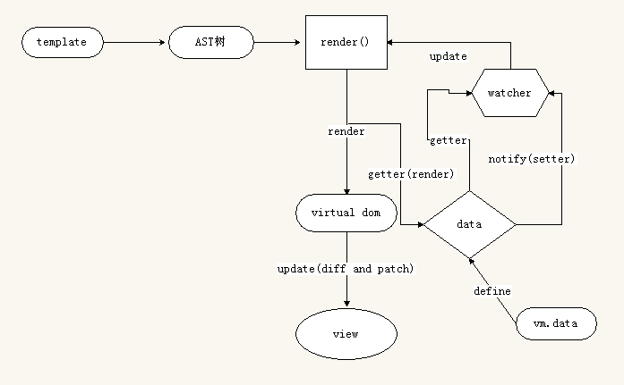
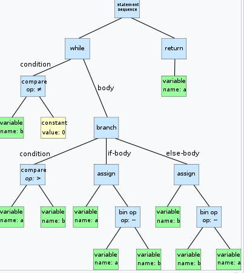
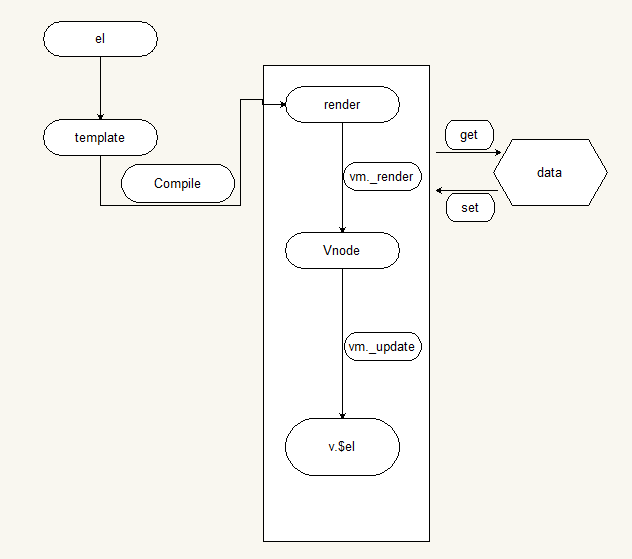
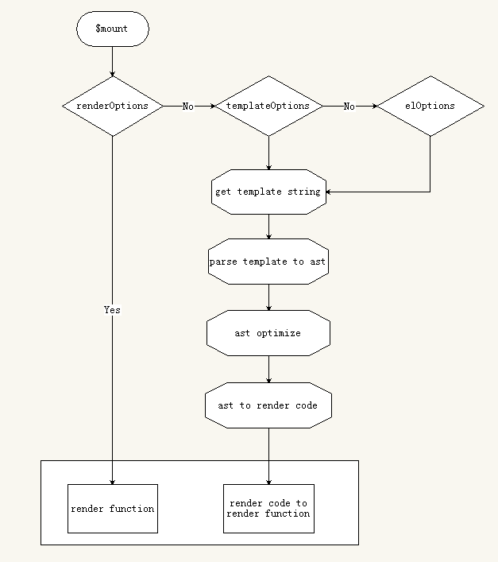

基本概念
如果需要用vue来编写一些可复用的组件，那么就需要深入了解vue的render函数了。先了解下vue的渲染流程

可以看出，模板通过编译生成AST，再由AST生成vue的render函数，render函数结合数据生成了Vitual DOM,再由vue的diff算法和patch函数生成AST树。
AST：抽象语法树。

render函数：用来生成Vnode，vue是推荐使用模板来构建我们的应用界面，但底层还是会将模板编译成render函数。跑vue项目，在浏览器查看文件，我们可以看到模板编译成render的样子。
var render = function() {
var _vm = this
var _h = _vm.$createElement
var _c = _vm._self._c || _h
return _c("div", { staticClass: "container" }, [
_c("div", { staticClass: "seach-conaitor" }, [
_c(
"div",
{ staticClass: "seach-box", staticStyle: { width: "465px" } },
[
_c(
"button",
{
staticClass: "change_btn_bgcolor",
on: { click: _vm.creatNewEvalution }
},
[_vm._v("流程")]
),
_vm._v(" "),
_c("input", {
directives: [
{
name: "model",
rawName: "v-model",
value: _vm.searchText,
expression: "searchText"
}
],
attrs: { type: "text", placeholder: "请输入关键字" },
domProps: { value: _vm.searchText },
on: {
keyup: function($event) {
if (
!("button" in $event) &&
_vm._k($event.keyCode, "enter", 13, $event.key)
) {
return null
}
_vm.searchItem($event)
},
上面被编译的就是我们的.vue文件，最终还是会被编译成这样的render函数。
Virtual DOM:vue的虚拟Dom树。
Diff:vue的diff算法，内部实现很复杂，普通的理解是计算改变的状态，只要父组件状态改变，所有的子组件都会被更新，再结合patch生成新的AST树。
Patch:负责把这些虚拟DOM真正施加到真实的DOM上。
vue的渲染机制
vue的构建模式
独立构建 ：包含了模板编译器，渲染过程 HTML字符串->render()->VNode->真实的DOM节点。
运行时构建：不包含模板编译器，渲染过程 render()->VNode->真实的DOM节点。
独立构建可以理解为

再看下运行时构建

可以看出，在有三种渲染模式，分别是自定义的render()、template、el。
el的写法
let app = new Vue({
el:'#app',
data(){
return{
msg:'hello world'
}
}
})
这个就是我们通常直接html内的写法，直接挂载到页面元素上。等级最低，如果有template或者render，el将被忽略。
template的写法
let app = new Vue({
template:'<div>{{msg}}</div>',
data() {
return {
msg: 'hello world'
}
}
})
指一个字符串模板作为vue实例的标识使用。模板将会替换挂载的元素。如果render函数存在，该模板将会被忽略。
自定义render函数
Vue.component('anchored-heading',{
render:function(createElement){
return createElement(
'h' + this.level,
this.$slots.default
)
},
props:{
level:{
type:Number,
required:true
}
}
})
字符串模板的代替方案，允许你发挥JS最大的编程能力。该渲染函数接收一个CreateElement方法作为第一个参数用来创建VNode。
vue选项中的render函数诺存在，则vue构造函数不会从template选项或通过el选项指定的挂载元素中提取的HTML模板编译渲染函数。
其实这三种渲染模式最终都会得到render函数，只不过用户自定义的render函数省去了程序分析的过程，等同于处理过的render函数，而普通的template或者el只是字符，还需要解析成AST，再将AST转化成render函数。
官方推荐还是使用template或者el。这两种属于声明式渲染，理解容易。但对于一些逻辑复杂的需求，render用起来更方便。现在很多vue的UI插件是用render函数编写。
CreateElement
Vue通过建立一个虚拟DOM对真实DOM发生的变化保持追踪。
return createElement('h1',this.blogtitle)
createElement 到底会返回什么呢？其实不是一个实际的 DOM 元素。它更准确的名字可能是 createNodeDescription，因为它所包含的信息会告诉 Vue 页面上需要渲染什么样的节点，及其子节点。我们把这样的节点描述为“虚拟节点 (Virtual Node)”，也常简写它为“VNode”。“虚拟 DOM”是对由 Vue 组件树建立起来的整个 VNode 树的称呼。
createElement参数
// @returns {VNode}
createElement(
// {String | Object | Function}
// 一个 HTML 标签字符串，组件选项对象，或者
// 解析上述任何一种的一个 async 异步函数，必要参数。
'div',
// 如果是函数需要返回一个Object或者String
// {Object}
// 一个包含模板相关属性的数据对象
// 这样，您可以在 template 中使用这些属性。可选参数。
{
// data
},
// {String | Array}
// 子节点 (VNodes)，由 `createElement()` 构建而成，
// 或使用字符串来生成“文本节点”。可选参数。
[
'先写一些文字',
createElement('h1', '一则头条'),
createElement(MyComponent, {
props: {
someProp: 'foobar'
}
})
]
)
再看第二个参数，data
{
// 和`v-bind:class`一样的 API
// 接收一个字符串、对象或字符串和对象组成的数组
'class': {
foo: true,
bar: false
},
// 和`v-bind:style`一样的 API
// 接收一个字符串、对象或对象组成的数组
style: {
color: 'red',
fontSize: '14px'
},
// 正常的 HTML 特性
attrs: {
id: 'foo'
},
// 组件 props
props: {
myProp: 'bar'
},
// DOM 属性
domProps: {
innerHTML: 'baz'
},
// 事件监听器基于 `on`
// 所以不再支持如 `v-on:keyup.enter` 修饰器
// 需要手动匹配 keyCode。
on: {
click: this.clickHandler
},
// 仅对于组件，用于监听原生事件，而不是组件内部使用
// `vm.$emit` 触发的事件。
nativeOn: {
click: this.nativeClickHandler
},
// 自定义指令。注意，你无法对 `binding` 中的 `oldValue`
// 赋值，因为 Vue 已经自动为你进行了同步。
directives: [
{
name: 'my-custom-directive',
value: '2',
expression: '1 + 1',
arg: 'foo',
modifiers: {
bar: true
}
}
],
// 作用域插槽格式
// { name: props => VNode | Array<VNode> }
scopedSlots: {
default: props => createElement('span', props.text)
},
// 如果组件是其他组件的子组件，需为插槽指定名称
slot: 'name-of-slot',
// 其他特殊顶层属性
key: 'myKey',
ref: 'myRef'
}
这个官方的表述已经很清楚了。如果使用render函数来渲染，v-model，v-if这样的指令都需要自己定义。可以在render函数中封装一些自己业务需要的指令。
比较一下template和render创建一个相同的组件
<div id="app">
<custom-element></custom-element>
</div>
Vue.component('custom-element',
{ template: `<div id="box" :class="{show: show}"@click="handleClick">Hello Vue!</div>`,
data () {
return {
show: true
}
},
methods: {
handleClick: function () {
console.log('Click!')
}
}
})
render
Vue.component('custom-element', {
render: function(createElement) {
return createElement('div', {
class: {
show: this.show
},
attrs: {
id: 'box'
},
on: {
click: this.handleClick
}
}, 'Hello Vue!')
},
data() {
return {
show: true
}
},
methods: {
handleClick: function() {
console.log('Click!')
}
}
})
再声明一个Vue实例，并挂载到真实DOM上
let app = new Vue({
el: '#app'
})
这样就很好理解了，render函数不需要编译生成AST。
render函数结合上面我们给的数据直接生成vitual DOM,再由vue的diff和patch映射到真实DOM上，更新视图。